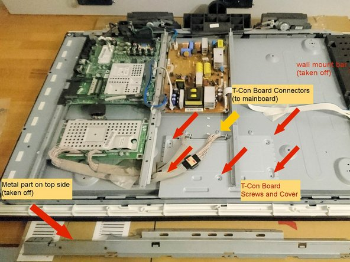

Find why an LCD television has sound but no picture
Use the TV’s own picture test, a reference HDMI source and a flashlight to separate external input, image and backlight faults.
Listen and look before buying anything
Use your own intact LED-backlit LCD television, its remote, a known-good HDMI source and lead, a flashlight and its owner manual. Note the exact model and whether the screen is LCD or OLED. TV standby behaviour varies by model. Stop at external observations if the screen is cracked, there is liquid ingress or the mains cord or enclosure is damaged. A set can play sound even when its image and backlight paths differ. T51 signal and light paths.

Photo by Arwedus and iFixit contributors, scaled with on-page callouts. Original repair photograph · CC BY-NC-SA 3.0.

Photo by Arwedus and iFixit contributors, scaled with on-page callouts. Original repair photograph · CC BY-NC-SA 3.0.
Watch the flashlight test. Copy the front-of-screen observation with the case intact. A faint image gives evidence that the panel is drawing something in the tested area. It leaves the driver, LED assembly, connectors and their control path as candidates. ShopJimmy demonstrates a faint picture on a dark screen.
Compare an internal image with a reference source
With the cabinet assembled, note the standby indicator and how it changes when you use the power button on the TV. Use the maker's procedure if the model reports a fault code. If it is unresponsive, check the external cord and an independently confirmed intact outlet before quoting a no-power fault.
Try the settings menu or volume bar. If you can see it, use the model's built-in Picture Test where available. Compare a working HDMI source and cable on a second input, selecting that input deliberately. A clean built-in picture with a repeatable source fault points toward the source, lead, port or input settings. Samsung calls it Picture Test on supported sets. Samsung's self-diagnosis procedure · LG's source and Picture Test checks.
If the LCD stays dark while sound continues, dim the room and request a menu or other known image. Illuminate the front from an oblique angle and look for moving text or a menu shape in several places. Record whether the screen glows without the flashlight, whether it appears briefly at startup and whether the symptom follows brightness or warm-up. A negative flashlight test by itself cannot identify a bad panel.
| What you can reproduce | Where to go next |
|---|---|
| Settings and built-in picture are good, one input is blank | Compare cables, input formats and ports with the same known-good source. Quote the TV's HDMI hardware only after eliminating the external path. |
| Moving picture visible with the flashlight, very little illumination from the screen | Record a fault in the light path. The LED strips, supply or driver and command or connector path need separating. See P100 backlight and panel-handling lab. |
| Screen glows but the built-in menu is absent or a line cuts through it | Investigate the video, timing, ribbons and panel with model evidence. A line in the menu is strong evidence that an HDMI source cannot explain the line. |
| Cracked glass and ink-like coloured blotches | Look up the exact panel price and shipping before quoting. A board or new LED strip cannot restore a broken panel. |
If the backlight stays on but the internal patterns show lines or a partial image, P106 walks the timing-board, ribbon and LCD panel decision.
Make a shop decision
Photograph the back label and the screen showing the fault, then note the source and test steps. A repair quotation should specify the branch proven so far, the cost of deeper diagnosis and what test the set must pass at pickup. Internal diagnosis and final electrical safety checks for a mains-powered set belong on a competent service bench. Unplugging by itself does not verify absence of stored voltage. This exercise uses closed-case tests only. HSE guidance for TV servicing and electrical testing.